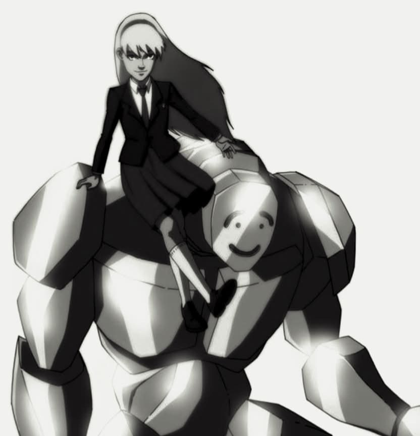

DAILY PLANET
METROPOLIS • EST. 1885
"Child": The Primordial Entity Whose True Name No One Dares Speak Seen Alongside Solomon Grundy in Gotham

The entity known only as "Child" — a primordial force of chaos
GOTHAM CITY — Some names inspire hope. Others inspire fear. And then there is one that, according to occult scholars and experts on the supernatural, should never be spoken at all.
Very few surviving records make any mention of the entity's true name. Some believe it was erased from history itself. Others claim that those who discovered it never lived long enough to repeat it. Whatever the truth may be, every recovered document, witness account, and historical record refers to the being by only a single title:
Child.
A primordial entity described in arcane texts as the living embodiment of chaos itself.
Ancient records credit Child with feats beyond mortal comprehension. Sources within the magical community claim the entity once held her own against Doctor Fate, Zatanna, Klarion, and Green Lantern Alan Scott simultaneously. Yet she was never truly defeated. Instead, she was merely banished after her connection to the mortal plane was severed.
Now, all signs suggest she has returned.
Over the past several hours, multiple informants from Gotham's criminal underworld have come forward after allegedly overhearing a conversation between Child and Solomon Grundy. According to their statements, the pair appeared to be discussing the possibility of working together.
While no official recording has surfaced, independent witnesses have provided remarkably consistent accounts of the exchange.
Alleged conversation between Child and Solomon Grundy (unverified)
According to those present, Child openly mocked the idea of engaging in physical combat herself.
"It makes no sense for someone like me to waste time doing physical work. Chaos belongs on a far greater scale."
Witnesses claim the entity suggested allowing Solomon Grundy to serve as the physical force behind their destruction while she manipulated events beyond mortal understanding.
Not everyone agrees on how the meeting ended.
Some claim Grundy rejected any proposal of an alliance. Others insist the conversation quickly escalated into a heated exchange of threats and insults, drawing the attention of numerous villains throughout Gotham.
One anonymous witness described the encounter simply:
"It looked less like a negotiation and more like two natural disasters arguing over who would destroy the world first."
Several witnesses further allege that Child departed visibly displeased after Grundy refused to cooperate, reportedly warning that once she unleashed the full extent of her primordial power, he would become nothing more than another obstacle to erase.
Those claims, however, remain unverified.
Experts warn that, if even part of these reports proves true, the mere possibility of cooperation between Child and Solomon Grundy would represent one of the greatest supernatural threats in recent memory.
Neither the Justice League, the Justice Society, nor any representative of Earth's magical community has issued an official statement.
As Gotham debates whether the reports are nothing more than criminal rumor, one question continues to linger:
If even her true name has been erased from history... what is Child truly capable of?
This is a developing story.